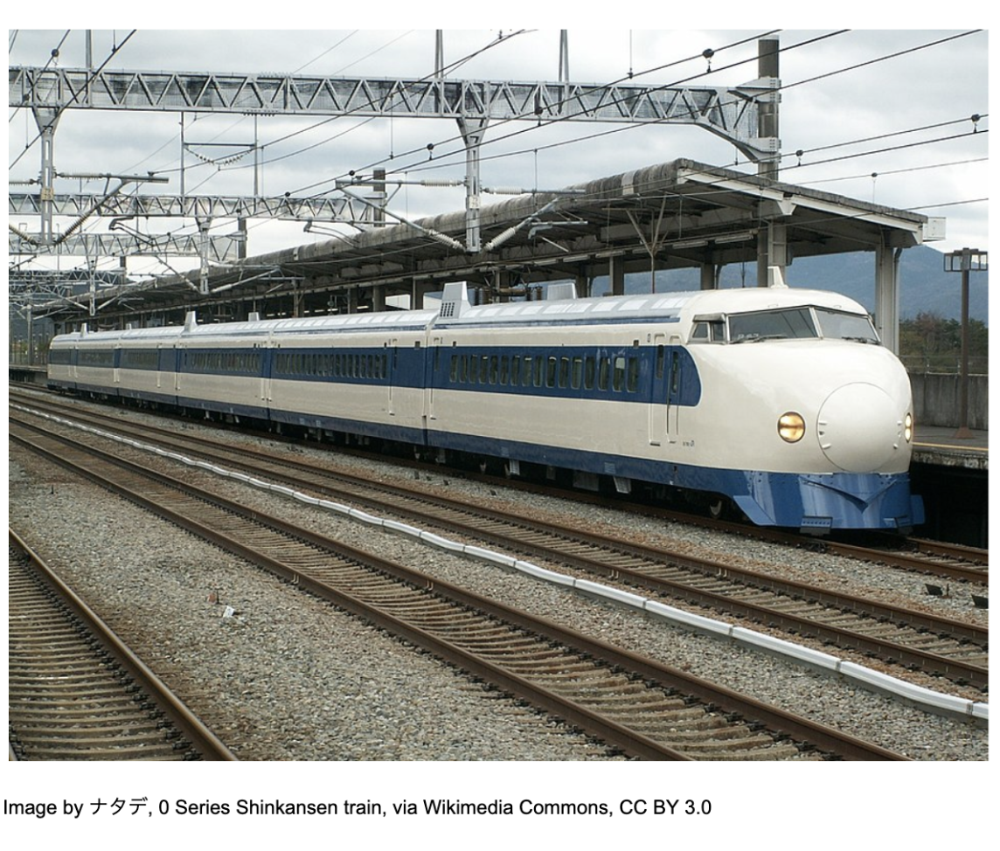
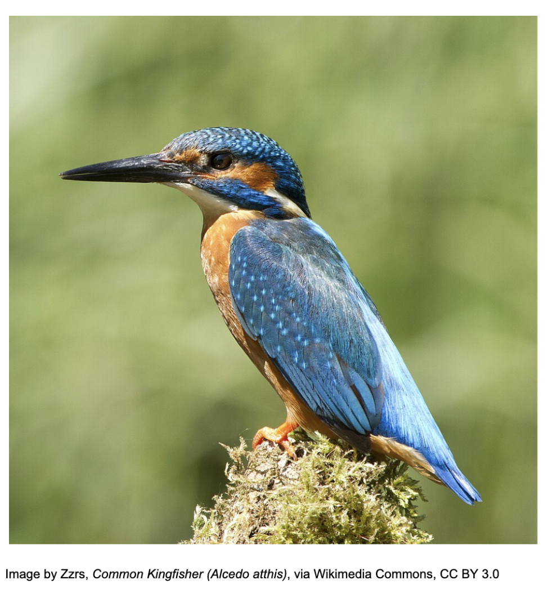
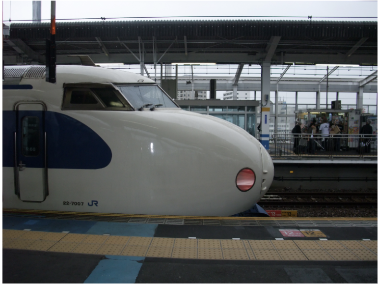
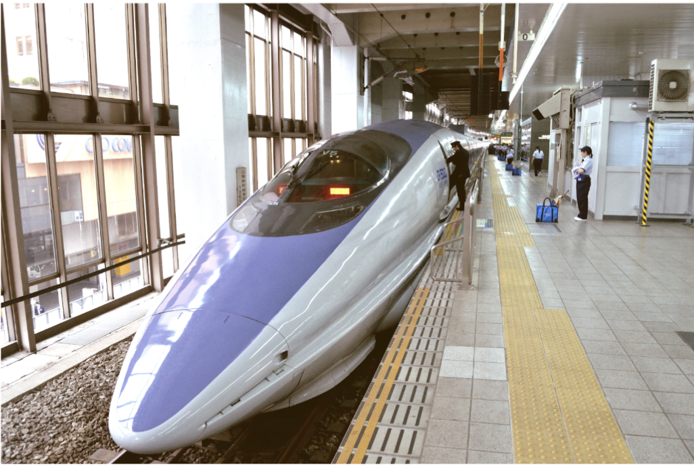

Biology • Engineering
Biomimicry: the Kingfisher and the Shinkansen
Biomimicry, also known as biomimetics, is defined as the mimicry of models and systems present in nature to solve complex engineering issues. Rather than developing entirely new designs from scratch, engineers analyze biological structures that have been refined over millions of years of evolution. One of the most well-known examples of biomimicry was when Swiss engineer George De Mestral drew inspiration from the hook-like features on the seed heads of the burdock plant to create Velcro.
A more advanced and large-scale application of biomimetics was seen in the development of Japan’s high-speed rail system, the Shinkansen. In October 1964, the Japanese National Railways introduced the Shinkansen 0 series for use on the Tokaido Shinkansen line, connecting Japan’s largest cities: Tokyo, Nagoya, Kyoto, and Osaka.

When it was first introduced, the Shinkansen 0 series became the fastest passenger train in the world, operating at 210 km/h (compared to most trains globally traveling at 100-160 km/h). However, as newer Shinkansen models were developed, speeds exceeded 210 km/h, which resulted in a significant issue known as tunnel boom.
Tunnel boom is a phenomenon that occurs when a high-speed train enters a tunnel and creates a massive compression of air that cannot disperse quickly enough from the sides of the train, acting like a syringe. The compression waves move ahead of the train at the speed of sound, gradually developing into a pressure wave, and once the air reaches the end of the tunnel, there is a large expansion causing an explosive noise upon exiting, disturbing residents kilometres away.
The root cause of this issue was the blunt nose cone, as shown in the image above. The narrow space between the train and the tunnel walls results in most of the air being pushed in front of the train. Other than causing tunnel boom, the nature of the nose cone limited the trains from traveling at even higher speeds.

Aquatic prey (fish, crustaceans, and aquatic insects) make up more than 90% of the Kingfisher’s diet, meaning the bird’s hunting practices mainly consist of diving into water at very high speeds. Kingfisher birds can plunge into water at speeds of up to 40 km/h, and due to their specialized, long, and sharp beaks, they allow them to enter with minimal splashing to avoid alerting prey. Eiji Nakatsu, an engineer and bird lover, drew inspiration from this phenomenon to solve the problem he and his team at the West Japan Railway Company were facing, tunnel boom. He redesigned the nose of the Shinkansen to be more streamlined like the Kingfisher’s beak. The design improved the aerodynamics, which reduced the pressure waves generated when the train entered a tunnel.
What made the Kingfisher’s beak an effective model was its ability to transition between air and water with minimal disturbance. This was due to its long, tapered beak, which allowed for a gradual displacement of water rather than a rapid displacement causing splashing. Engineers applied this concept to the Shinkansen 500 series by elongating and streamlining the nose cone.


The images above show how the nose of the Shinkansen changed.
This new design reduced the rate at which air was compressed when the train entered the tunnel, this reduced the pressure wave. Other than the reduction of the effect of the tunnel boom, the speed of the train was increased by 10% and the energy consumption was reduced by 15%.
However, it is important to understand that simply mimicking the beak of the kingfisher wasn’t the perfect solution. While it did provide an effective blueprint, engineers still had to adapt the concept to design constraints, material limitations, and safety requirements. This highlights an important limitation of biomimicry; although you can use the concept as a guideline, it usually requires a significant amount of modification before providing a perfect solution.
Despite the potential limitations faced by the engineers, the Shinkansen example demonstrates how important interdisciplinary thinking is. By combining principles from biology and physics, they were able to solve a problem in fluid dynamics that improved efficiency and environmental impact.
Ultimately, the success of the Shinkansen redesign demonstrates that effective engineering is not always about coming up with new ideas or using overly complicated concepts, but recognizing and applying the right ones. The best idea may just be in your back garden.